Ubuntu Setup Guide
This is a software engineering course. There a focus on reading code and using large systems to accomplish tasks, because real systems are large—too large for you to hold their entire specification or codebase in your head, almost certainly. In this course, you will be expected to develop and maintain programs and scripts in multiple languages using multiple tools. As a result, we want to help you prepare a suitable development environment for the assignments in this course—your local environment might work, but all the assignments are guaranteed to work in Ubuntu 22.04. This tutorial will guide you in setting up an Ubuntu 22.04 environment.
This tutorial will help you create a development environment that matches the autograder environment. If you choose to deviate from the suggested x86_64 Ubuntu 22.04 environment, you may encounter corner cases that cause test cases to fail on the autograder. In some cases, the staff may direct you to set up an Ubuntu 22.04 Virtual Machine if you have not done so and are stuck on some assignments. Ultimately, it is your responsibility to read documentation and install supported tools. This tutorial is meant to help you walk through the creation of an x86_64 Ubuntu 22.04 environment.
This tutorial is most useful for deploying covey.town, which is easiest on a free-tier AWS instance created using the “Cloud” option in this tutorial.
Two Options — Local or Cloud
There are two options that this tutorial covers:
- Option 1: Local: Set up a local Ubuntu 22.04 Virtual machine on your computer. This is the most popular option for individual assignments, but the individual assignments typically work in most environments (so you probably don’t need to do this unless you run into a problem). It has a nice UI that makes it easy to navigate.
- Some students may have WSL Ubuntu set up. It is a different version of Ubuntu and may or may not work for this class: we recomend that you follow the instructions below if you run into trouble. However, your experience setting it up will help you here!
- Some student reports that VirtualBox is not compatible with the new Macbooks (e.g., with M1 and M2 chipsets). If you are using such a Macbook, you may have to select the Option 2 below and use the Cloud instead of your local machine.
- Some students have experience with docker. Unfortunately, docker will not suffice here (but experience with it will help you): follow the instructions below.
- Some students already have other versions of Ubuntu installed. Covey.town will probably work fine on these other versions, but again if you run into trouble you should follow these instructions.
- Option 2: Cloud: Set up an Amazon EC2 cloud instance with Ubuntu 22.04 running on it. This option will work if you have a slower or older computer. Start early; Amazon takes up to 24 hours to verify cloud computing accounts. This option involves more of a command-line interface but typically runs some course tools a bit faster than local machine. This option also has the advantage that you can easily run a webserver (or other publicly-accessible webservice, such as covey.town!) from an EC2 instance.
Both options should work with all assignments in this course. Option 1 (local VM) will have you install VirtualBox on your computer, download an Ubuntu 22.04 installation image, and install x86_64 Ubuntu 22.04 in your virtual machine. A reasonably modern computer (e.g., at most 5 years old) should be able to run a VM guest without issue. However, some students report that the VM executes too slowly (e.g., the mouse is laggy, keystrokes are missed, programs take too long, etc.). If your VM guest is too slow, you can consider using Option 2 instead (see below).
First, you may want to read the summary of virtual machines and cloud computing below. Even if you are familiar with the concepts from previous experiences, this course may use slightly different terminology, and I recommend that you skim the material (click on the box below to see the background material).
Background: Virtual Machines and Cloud Computing
A Virtual Machine is an emulation of a computer system. Loosely, you can think of a VM as a program that can run an entire virtual computer system. Virtual machines are powerful software systems that enable running software designed for one operating system inside another operating system.
For example, you can use your Windows host computer to run a Virtual Machine that contains a Linux operating system. Consider the image below:
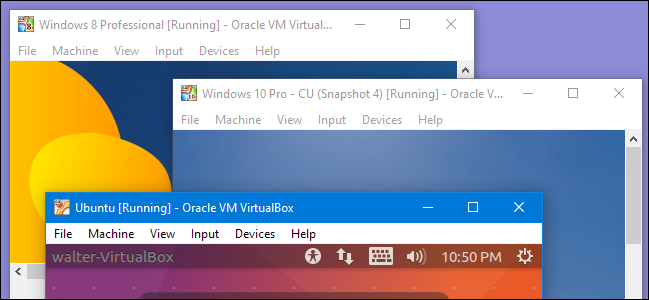
This is a Windows 10 host_computer running three different Virtual Machine _guests. The guest instances are complete (virtual) environments that are isolated from the host. All of the guests share the host’s hardware as they execute — each window in the screenshot above lets you interact with a separate emulated guest.
Thus, even though the host is a Windows computer, you can use one of the guests to execute Linux software inside the guest. Virtual Machines can be used in many combinations. You can have a Windows, Linux, or Mac host computer, and run arbitary numbers and combinations of Linux and Windows guests. Finally, guests are stored as files in the host computer — this means you can move your VM guest from one host to another by transferring that file around.
Option 1 (“Local”): You can choose to set up and run your own Ubuntu 22.04 virtual machine locally. This will allow you complete all of the assignments in this course within that virtual machine. However, some students report that the VM guest runs too slowly (especially if you do not have enough RAM in your computer). If you find that a local VM is too slow, you can use Option 2 instead.
Virtual machines are a critical part of Cloud computing. You can “rent out” computing resources from a provider like Amazon EC2 or Microsoft Azure to do whatever computation you might need. Amazon EC2 and Microsoft Azure both offer you virtual machine guests that run on their hardware. Thus, you can get access to a virtual machine running whatever operating system you like to run a variety of software.
Option 2 (“Cloud”): If you find that a local VM is too slow, you can instead get a free Ubuntu 22.04 virtual machine from Amazon EC2 (or any other cloud computing provider, but this specification walks you through how to do it on EC2). Amazon EC2 (“Elastic Cloud Compute”) is a service that lets you buy and configure virtual machines. Option 2 has you setup and launch an Ubuntu 22.04 cloud instance (this is free if you are a student).
Many of the assignments are easier to complete on Linux or similar command-line systems. If you’re not comfortable with such systems, the background tab below on Linux Fundamentals might be useful:
Background: Linux Fundamentals
Vanderbilt professor Kevin Leach has prepared a (long) video that provides a gentle introduction to a number of Linux concepts that are relevant to this course. This video is optional, but you may find it useful if you are less familiar with the Linux environment.
There are timestamps in a comment below the video that contain points of interest, such as:
- terminals
- environment variables
- scripts in the shell
- compiling programs from source
- using ssh
The first half is more about terminals and shells (why do we have to type ./a.out? why can’t we just say a.out?), and the second half is more about compiling programs from source. The video also covers elinks in particular, which is a terminal-based browser program (using elinks is not required for this course, but it might be helpful if you choose to use a cloud computer and need to access the web to e.g., submit an assignment).
Option 1 — Local Virtual Machine
You can set up your own local virtual machine for free. However, before you proceed, consider checking whether your CPU supports accelerated virtualization. If your CPU does not support virtualization extensions, then your VM may run slowly. If that’s the case, consider Option 2 for this assignment instead.
You will need:
- A copy of VirtualBox for your operating system. General download link (look under “Platform Package” or similar).
- A copy of 64-bit Ubuntu 22.04 (Download — 64-bit is required here: don’t use 32-bit). This is a large
.isofile that might take a long time to download. You don’t need it until part way through the installation process, but you should start the download now. - When something goes wrong during this installation, we recommend that you search this webpage and also look for previous posts on the forum. Some solutions may be listed a little lower on the webpage than when you encounter them. Macs typically give students many more issues than Windows machines, so if you are a student using a Mac, looking to see if the issue is already addressed can be a big time saver.
VirtualBox
VirtualBox is a Virtual Machine Manager. You install VirtualBox on your host computer (i.e., as a regular program or app). Then, you use VirtualBox to create a virtual machine guest. Once you have created a guest, you install Ubuntu 22.04 inside of the guest. Then, you can start the guest and have a complete Ubuntu 22.04 environment within that guest.
Isolation in Virtual Machine Guests
Note well: Implicit here is that the guest is, to some extent, isolated from the host. This is very important and entails a number of conceptual hurdles if you are not used to virtualization:
- The clipboard is isolated. That is, if you copy something from your host environment, you cannot paste it inside the guest environment. This is because the VM guest is a completely independent operating system environment from your host.
- Typing and mouse movements have to be captured by the guest.
- If you want to download a file to use in the guest, you must do so from the guest environment. Unless you set up a shared drive (which is not required), you have to download or create files within the guest environment rather than the host environment.
Installing VirtualBox
You can install VirtualBox with the default settings. For your reference, screenshots of the course staff completing the installation are shown below:


If you receive a “The installation failed.” message on a Mac, you can resolve the issue by going to Security and Privacy and allowing the installation.
Creating a Virtual Machine
After installing VirtualBox, it will display the main VM Management console, which we can use to create a New Machine (see circular highlight in upper left):
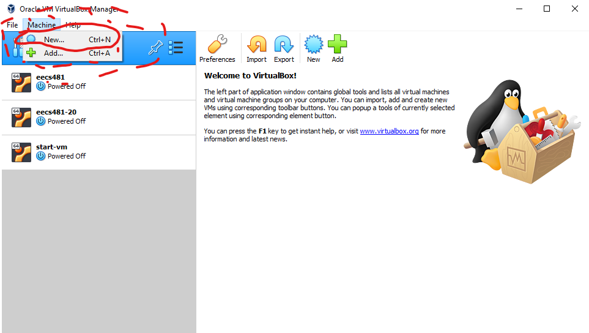
Next, configure your virtual machine. Select “Type” as “Linux” and “Version” as “Ubuntu 64-bit”. (If you only see options for 32-bit and do not see options for 64-bit, you will not be able to complete this option and will instead have to use the Amazon EC2 Cloud instance option. This happens to some students with older 32-bit Mac machines that cannot emulate 64-bit guests.) You can name your VM whatever you like (though note that the name in the picture is from a different course than this one that uses the same setup). We recommend using at least 2048MB of Memory. See highlights below:
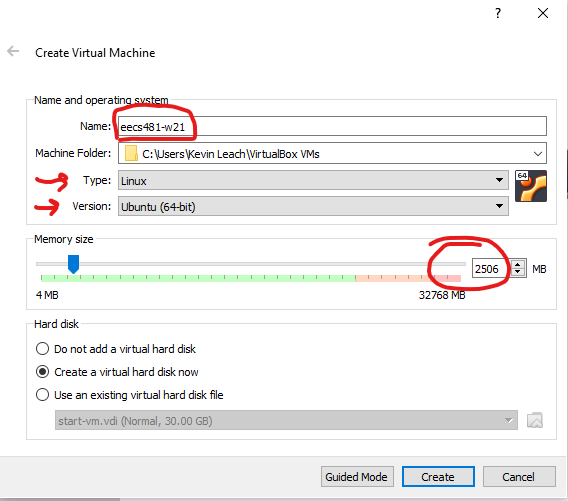
Next, it will ask you to create a storage device. Remember, you are creating a virtual machine — an entire simulated computer. That includes simulating a hard disk for storage. This is represented as a large (> 20GB file) on your host computer. We recommend at least 20GB, and you can choose “dynamically allocated” to save space:
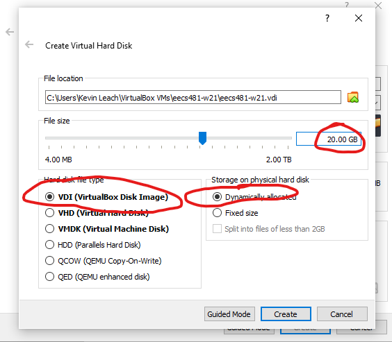
After this step, you will have successfully created a Virtual Machine. Now, you have a bare system with nothing installed on it. Next, we must install an OS on it to run the VM.
Installing an OS in the Guest VM
After creating a VM, we need to install Ubuntu 22.04 on it to help run software. Remember downloading a large .iso file as indicated above when we discussed downloading Ubuntu (if you missed it, you should go back and download it now)? This is a Disk Image — we need to attach the OS Disk Image into the VM.
On the VM Management window, right click the VM you just created, and click “Settings”:
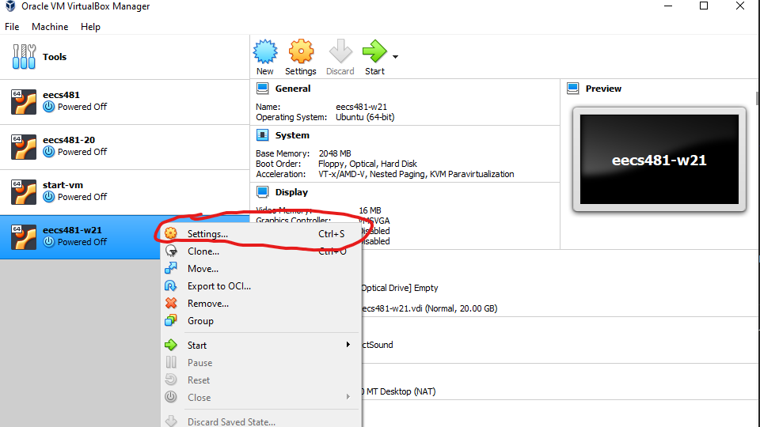
Next, click on “Storage”, then click on the “Empty IDE Controller” (your version of VirtualBox may call this a CD drive, Optical storage drive, or similar. Regardless, you should be able to select a virtual disk image). Click the Disk icon, then click “Choose disk file…”:
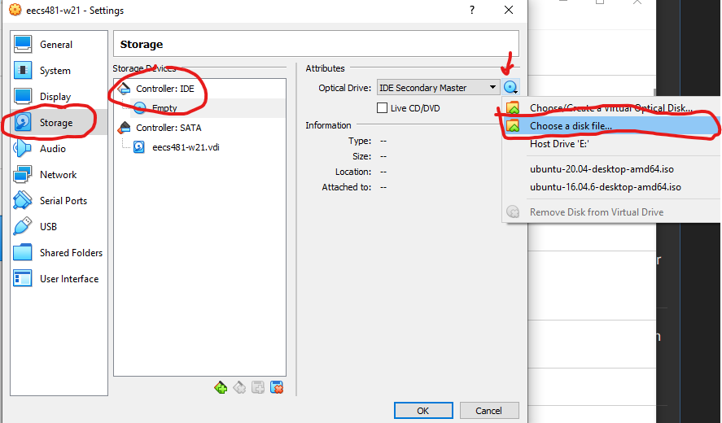
Then, select the Ubuntu .iso file you downloaded earlier. This places the Ubuntu 22.04 installation medium in the VM’s disk drive. Click OK, and you are now ready to start your VM from the Manager (note: the image below is from a previous version of the course that used Ubuntu 16.04 instead of Ubuntu 22.04. When you do this, your .iso file must be for Ubuntu 22.04.):
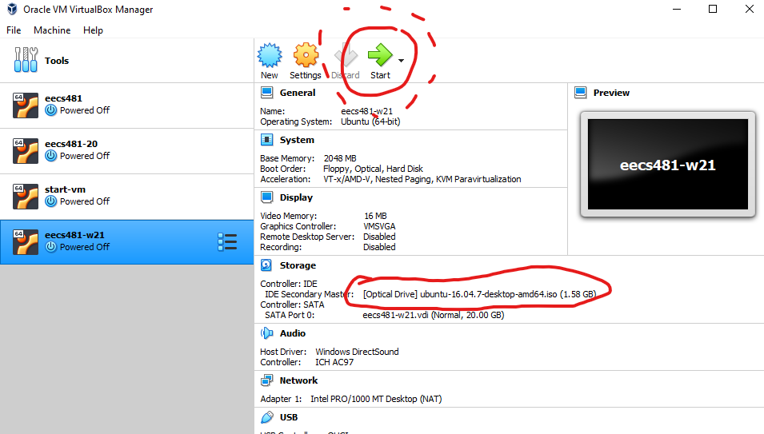
If you receive a “Kernel driver not installed” error, follow these instructions online for how to resolve the issue. (The image below shows the “Kernel driver not installed” error, for your reference.)
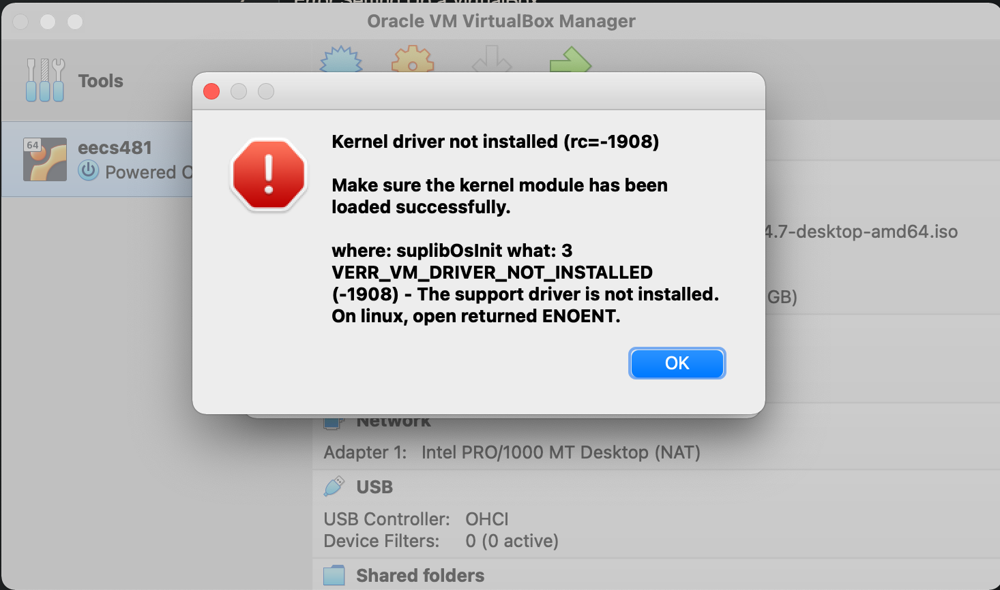
The Virtual Machine will now boot and load the Ubuntu 22.04 installation. The VM opens in a new window — you can think of this window as the virtual “screen” that lets you see what’s happening in the emulated system. You can follow through the normal Ubuntu 22.04 installation:
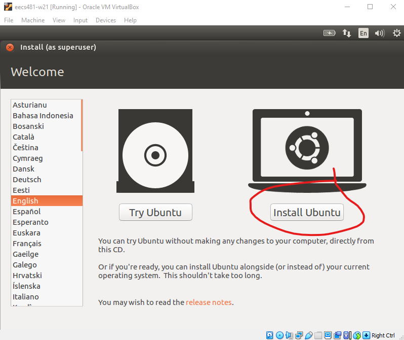
Note: If the VM asks you to select a startup disk, you need only select your .iso file. You want the VM to boot from the installation media so you can install Ubuntu within the guest.
We recommend opting to install updates and third-party software. It should not affect the system one way or another:
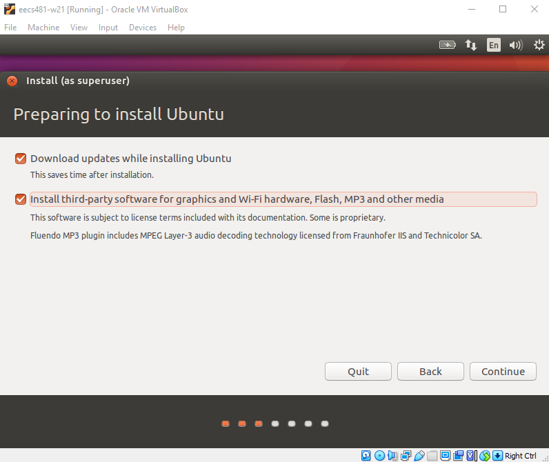
You can select “Erase disk and install Ubuntu”. This is only referring to erasing the “virtual” disk you created earlier with the VM.
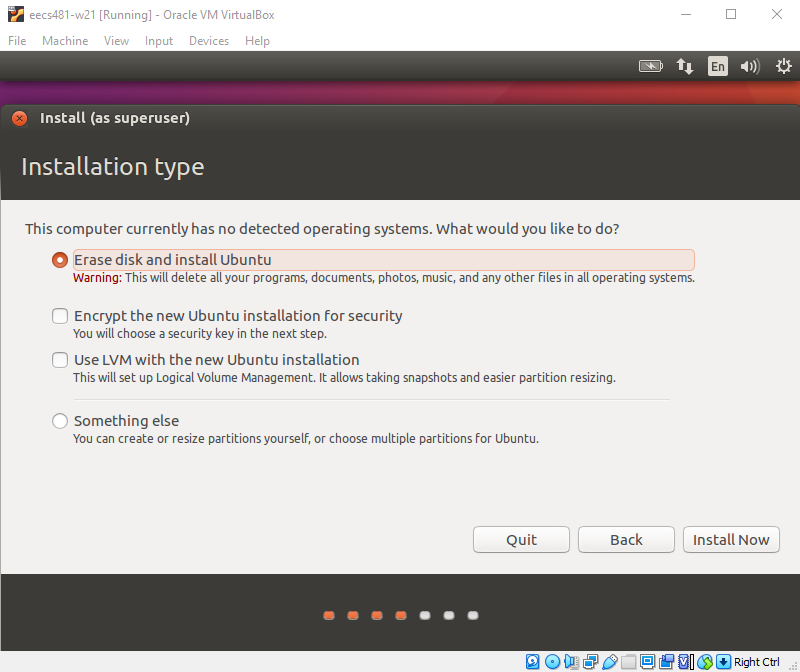
If you are receiving an error like the “following disc images couldn’t be opened for the reason of no mountable file systems”, you may be able to resolve the issue by following recommendations online
Note: Sometimes during installation, students find that a window is too large to display all the buttons. You can actually move the window like normal to reveal the Continue button (just click to drag the window like any other — the window inside the Virtual Machine, not the Virtual Machine itself):
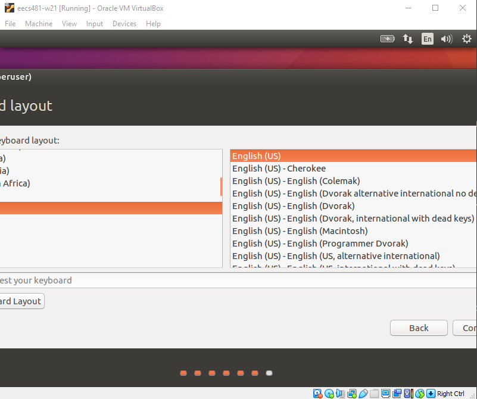
Next, it will ask you to create an account for logging in. You can put whatever credentials you like here — it will not have any bearing on your host computer. This is merely for an account on the guest VM. Just make sure you don’t forget whatever password you choose!
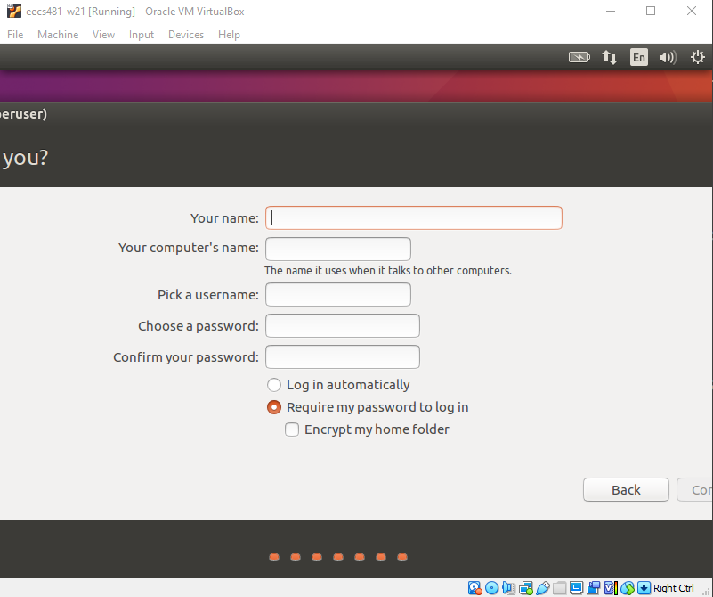
Next, you just wait a bit for the OS to install inside the guest. It might take a few minutes to complete. Eventually, you’ll see a screen asking you to remove installaton media and restart. You can just click restart (on the guest) and you’ll be all set!
Virtual Machines and Mice
While you’re running the VM, you may find that it “takes control” of your mouse and keyboard, and you aren’t able to leave the window. If this happens, press CTRL+ALT to release control from the VM window. (The keystrokes may be different on Mac OS).
Install VirtualBox Additions
One thing you’ll notice when you install your VM successfully is that the window is small. In our opinion, one thing that makes the experience way better is the VirtualBox Additions package. It provides a number of “Quality of Life” features when using VMs. It’s essentially a helper program you install inside the VM guest that makes it “aware” that it’s running inside of a VM. To install, click “Devices”, then “Insert Guest Additions CD Image…”
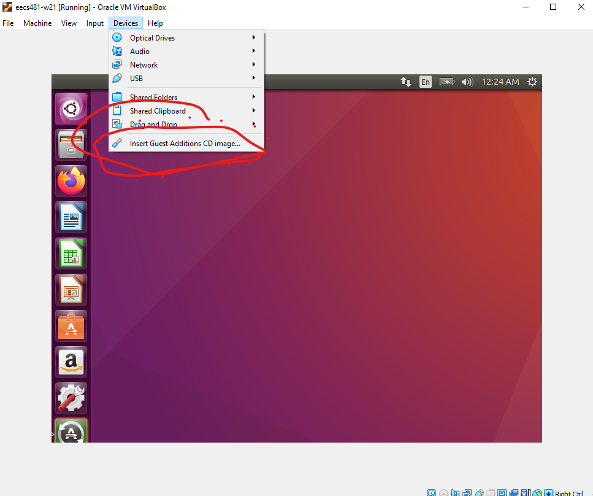
Eventually, a window pops up asking if you want to run the media. Just click Run.
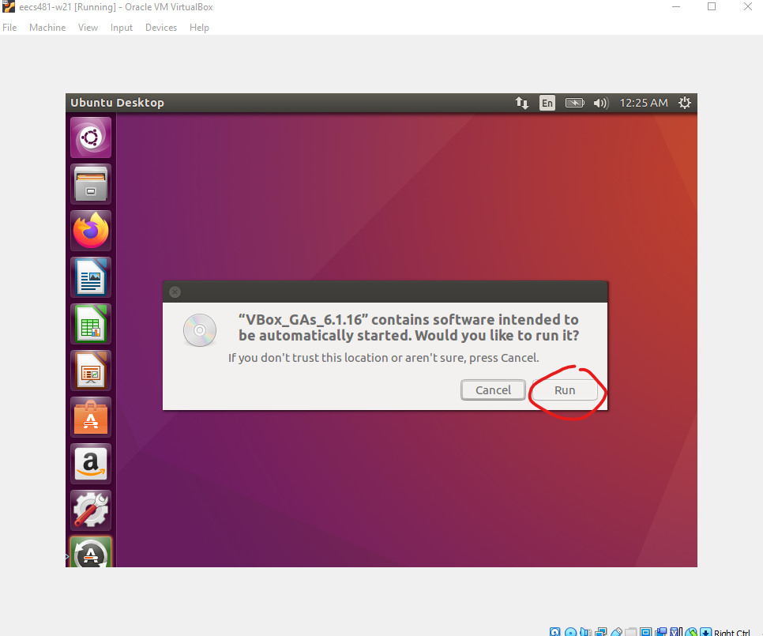
After installing, you can reboot the VM image. One more step to make sure gcc (a compiler for C and C++ programs) is installed in your guest. In a terminal, use:
sudo apt-get update
sudo apt-get install gcc
You’re all set!
Option 2 — Amazon EC2
Note well: This option will take longer than Option 1. Amazon AWS accounts can take up to 24 hours to verify, which means you may have to wait before you can use it for an assignment or demo. Start early!
You will need a Secure Shell (SSH) client. SSH allows you to remotely interact with a server. (If you’ve never used SSH before, scrolling back up the page and watching the appropriate section of the “Linux Fundamentals” video might help.) When you SSH to a remote computer, you have access to a command prompt that runs software on that computer. We will be using SSH to interact with a virtual machine we create in the cloud with Amazon EC2. On Windows, I recommend using WSL to run SSH. You can also use PuTTY. On Mac, you should already have ssh installed. Open a terminal and you can run ssh. On Linux, you can use ssh, but you may need to install it first (e.g., sudo apt-get install openssh or similar, depending on your platform). It is your responsibility to understand how to use SSH, though we give some pointers below.
Amazon EC2 is a cloud computing service that allows you to rent virtual machines that you can ssh to and run programs like any other computer. Amazon offers a large number of cloud-based services all under the umbrella of AWS (Amazon Web Services). EC2 is a subset of AWS. In this section, you will create an AWS account to manage EC2 virtual machines.
You can sign up for a new account on Amazon EC2, and in doing so, you get 12 months of free access to a virtual machine that is enough to complete the assignments in this course. If you do not already have an Amazon EC2 account, navigate to https://aws.amazon.com/ec2/ and click “Create new account” in the upper right.
Complete the sign up process. You may be prompted for credit card information, however you should not be charged as long as you create only one virtual machine on the free tier. You then will have access to the Amazon AWS Console. If you are prompted, you want to sign in as a “Root” user for the AWS console.
AWS Account Creation
Note that it can take 24 hours for Amazon to verify your account. We believe this is because they manually review account creation — after all, they are giving you access to computing resources. Since cloud services are easily abused (e.g., for spam emails, command and control virus management, and distributed denial of service attacks), Amazon applies a bit of scrutiny to AWS users. Start early!
Notice: AWS Web GUI Changes
Some of the screenshots in this guide are from older versions of the AWS Web Interface. The GUI changes fairly frequently and so your view may look a little different from the screenshots. Everything is fine and it’s good practice to follow along with documentation that is not an exact match. The course staff verified that the instructions work and pass the HW0 autograder most recently on 8/27/2022. If you believe you’ve discovered a problematic difference between this guide and the current version of the AWS GUI, contact your TA.
Creating a New VM
Now that you have created an account, you can use the AWS Console to help manage and launch virtual machine instances. We will walk you through the steps to create an Ubuntu 22.04 VM below.
(1) Open the AWS Console
After you create an AWS account, you can visit the AWS Console at https://console.aws.amazon.com. At the console, you should be greeted with a large screen full of many services. See highlight on left:
Click here to see AWS Console screenshot
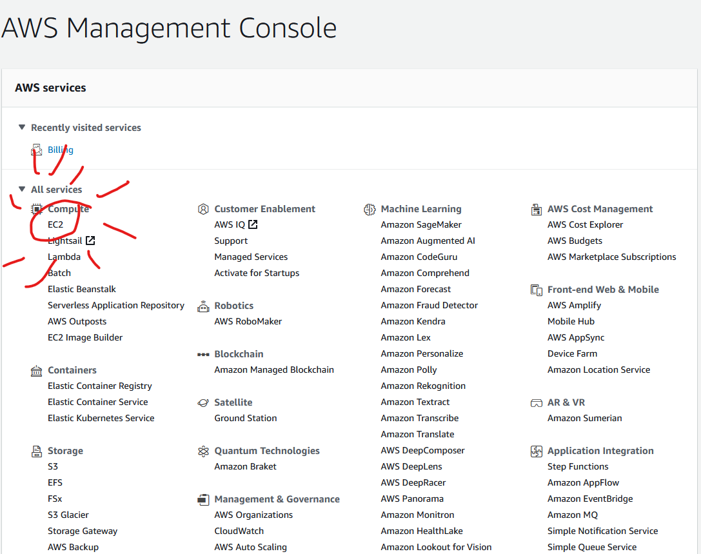
(2) Open the EC2 Manager
From the AWS Console, click the “EC2” link to open the Elastic Cloud Compute manager. The EC2 Manager lets you manage and launch Instances, which are virtual machines that you configure. The first thing we need to do is configure and launch a new instance. Click the Launch Instance button.
Click here to see EC2 Manager screenshot
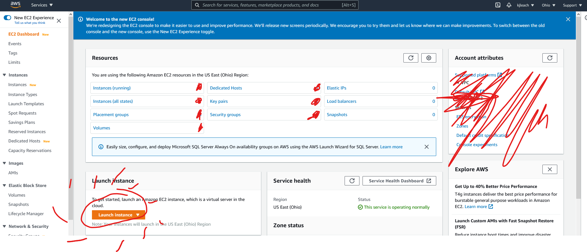
(3) Choose an Ubuntu 22.04 LTS Instance
This is the most important step. You must select an Ubuntu Server 22.04 LTS (HVM), SSD Volume Type instance. This is a free tier eligible instance that contains an environment suitable for completing the rest of the assignments. Don’t pick other versions of Ubuntu (NOT 18.04 or 20.04, etc.). The autograder uses Ubuntu 22.04 (in an AWS VM!), so if you want the smoothest experience, use that version. As of 1/12/2023, the correct image is the default for Ubuntu:
Click here to see screenshot of the instructor selecting the correct VM image
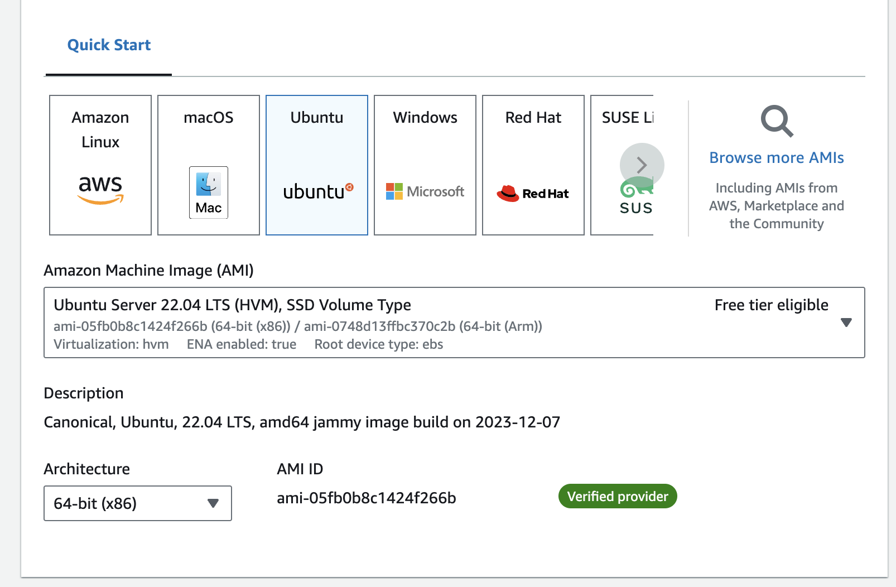
After that you can fill out the rest of the selection (e.g., making certain to select your key pair for that instance) and then verify that it is in the Free Tier.
Click here for "free tier" screenshot
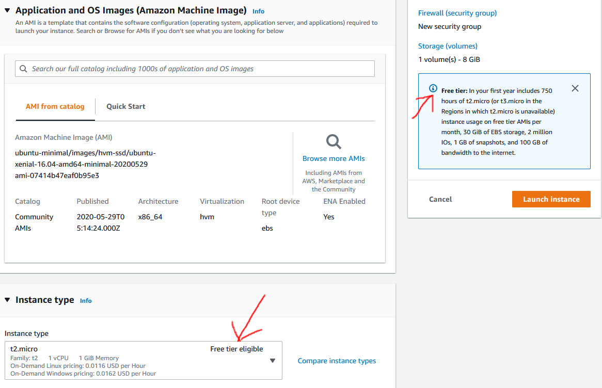
(4) Configure Your Instance
After you select the image to launch, it may ask you a few questions about storage (pick the default if so).
Usually, it will skip ahead and ask you about instance details. You want to pick the free version, called a t2.micro instance. If you were using cloud computing for a business or another project, you could configure resources like (a) how many CPUs, (b) how much RAM, and (c) what type of storage you get on the VM. For this course, just pick “t2.micro” to get the free level.
Click here for instance type selection screenshot
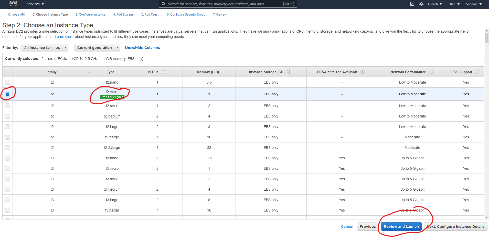
(5) Configure Authentication
After you set up your instance, you need to create a way to login. This is a tricky security problem because Amazon wants to give you root (Administrator) access to your new instance. The way they do this is by using asymmetric key encryption. Basically, Amazon will let you download a file that serves as your credentials. Rather than entering a password, you will provide this special file to let you login. If you’d like to learn more about asymmetric key encryption, take a security course.
Now, you will be prompted to set up credentials for logging in. Select Create a new key pair and type in any name (the examples use “eecs481” in the screenshots below). (If you are given a key type option, like “RSA” vs. “ED22519”, pick “RSA”.) Then, click Download Key Pair. It is imperative that you keep this file in a secure location. Do not upload it to GitHub, do not move it around. This is basically like a password for accessing your instance — you wouldn’t want someone malicious to access your instance and do something bad with it (you would be legally responsible for whatever they did!).
Click here for keypair creation screenshot
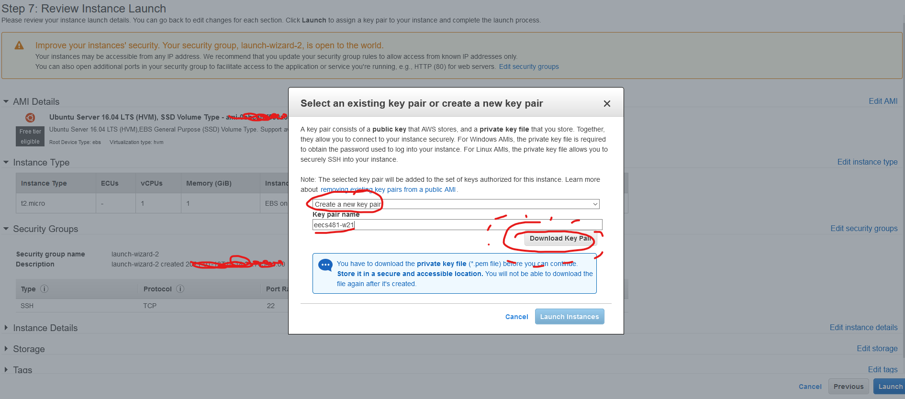
Once you had downloaded your Key Pair, you should be able to Launch your instance. Do so and continue. There is a screenshot below showing what you should see after launching your instance.
Click here for launch confirmation screenshot
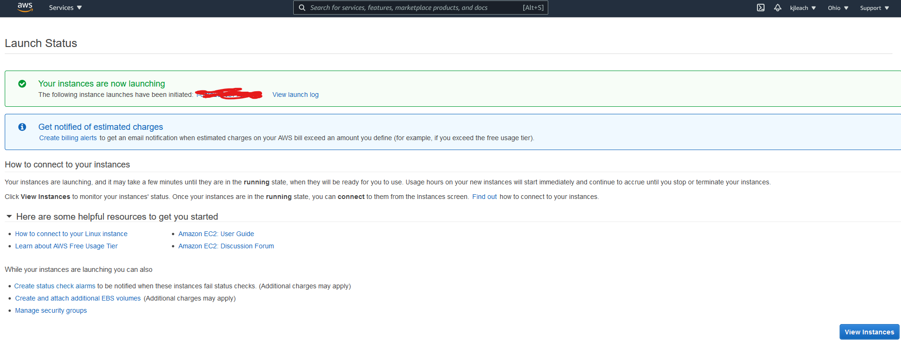
(6) Connect to Your Instance
At this point, you have set up an Ubuntu 22.04 instance on EC2 and created associated credentials. You now have a virtual machine running in the cloud that you can connect to. You will use ssh to connect to your instance. This is the recommended way — you could technically install a front-end and use remote desktop software, however we strongly recommend using the command line, since you will be using the CLI in many of the course assignments.
From the EC2 Management Dashboard, right-click your running instance. You should see a menu pop up like below:
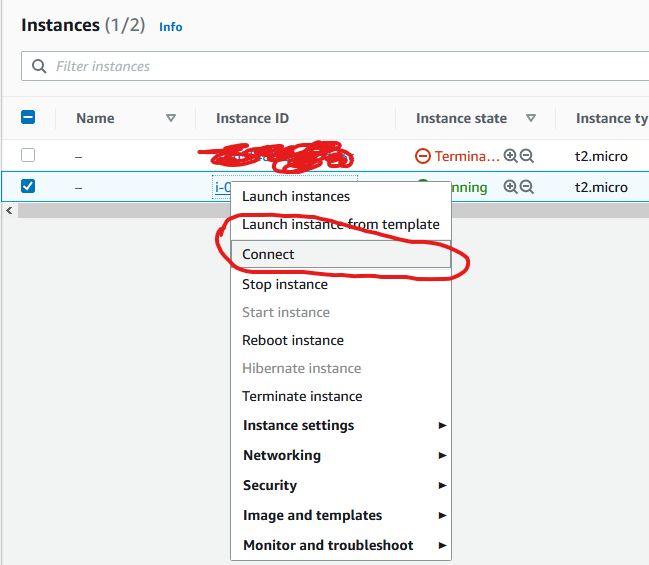
Click “Connect”. It will pop up a window giving you a number of options. Pick the “SSH Client” tab to see how to connect via ssh:
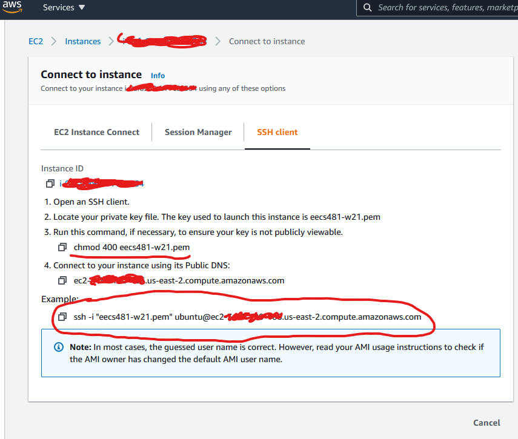
On this window, you will see the hostname of your EC2 instance to which you can ssh, as well as a number of instructions for connecting.
Mac permissions errors
Some students, especially those using Mac computers, report receiving permission errors when they try to SSH into their EC2 instances:
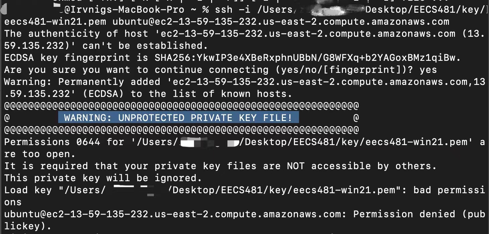
In this case, a command like
chmod go-rwx /path/to/eecs481.pem
usually resolves the issue. More information is available online about this SSH issue.
Using Windows WSL to SSH to EC2
If you are using Windows Subsystem for Linux (WSL) to connect to your Amazon EC2 instance, you must prepare your key file before connecting. Our recommendation is to run the following (but use your path):
mkdir -p ~/.ssh/
cp /path/to/your/downloaded/eecs481.pem ~/.ssh
chmod 400 ~/.ssh/eecs481.pem
Windows WSL does not apply Linux file permissions correctly unless you are dealing with files contained within the Linux FS. Moving your key to ~/.ssh/ will allow you to chmod 400 appropriately. The SSH client will not allow you to connect to any server using that key if it does not have the correct permissions.
Recall you downloaded a .pem file when you set up authentication for your instance (see part 5 above). You must specify this file on your SSH client to connect to your instance.
First, you must provide the correct access permissions to the .pem file. Usually, this means running chmod 400 /path/to/your/.pem. Once you do so, you can use the ssh command directly:
ssh -i /path/to/your/.pem ubuntu@<your-EC2-hostname-here>
(You must substitute in the path to your downloaded .pem file as well as the hostname of your EC2 instance, which takes the form of ec2-X-Y-Z.us.W.compute.amazonaws.com for some values of W, X, Y, and Z. Collect these values from the EC2 Console.)
If you receive an error that the path is “too long for Unix domain socket” or the like, open ~/.ssh/config in a text editor and modify the control path to match this (reference):
Host *
ControlPath ~/.ssh/control/%C
ControlMaster auto
At this point, you should be logged in to your EC2 Instance! See below for an example of connecting to such an instance from the WSL environment (though note that the machine in the screenshot uses an old version of Ubuntu. Your instance should be version 22.04 (codename: jammy) instead of version 16.04):
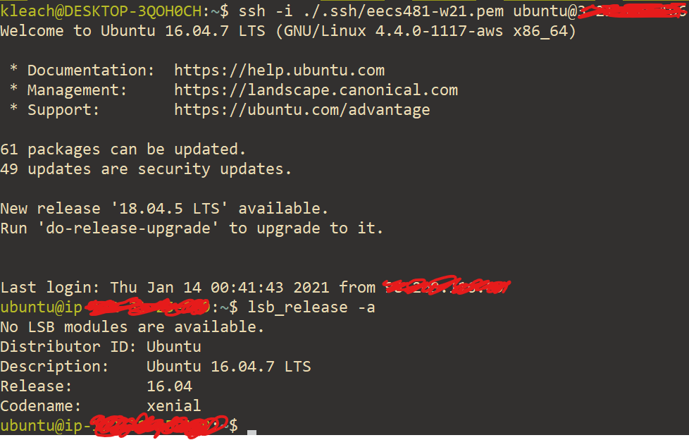
Once you’re all finished, you need one more step to install gcc (a compiler for C and C++ programs):
sudo apt-get update
sudo apt-get install gcc
You can safely stop the VM instance when you aren’t using it (e.g., between homeworks) and restart it when you are.
Final Remarks
There is some systems programming in this course. We will use a mixture of command line tools, multiple languages, and other large projects that you may not have seen, written, or used before. That’s the point. In software engineering, much of your day-to-day work will involve reading code and documentation, as well as getting things set up to run. We are big believers that this type of experience is some of the most valuable you can acquire as a student — it makes you more productive at other tasks.
This tutorial is not meant to take more than 2 hours (excluding the time taken to download the Ubuntu 22.04 .iso in Option 1, or the Amazon AWS signup time in Option 2). Please contact us on Discord if you have any questions!